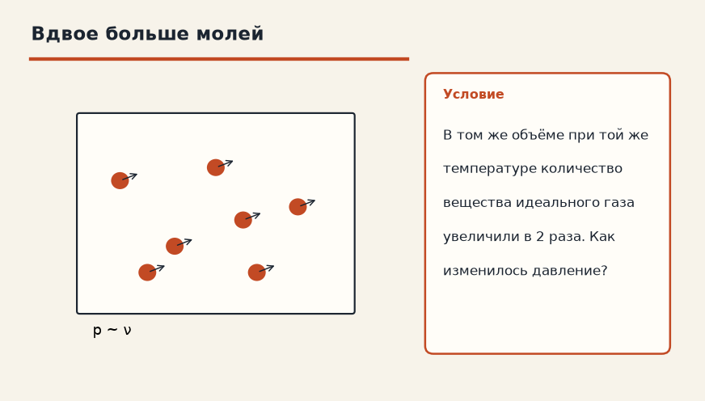

Тема «Уравнение Менделеева-Клапейрона»: физический смысл, единицы величин, типичные ошибки и два разобранных примера.

Схема к условию.
Физический смысл
Универсальный закон для любого состояния газа. Связывает все параметры: давление, объем, температуру и количество вещества.
Уравнение Менделеева-Клапейрона собирает все газовые законы в одну строку: p·V = ν·R·T. Если массу удобнее писать в килограммах, ν = m/M и получается p·V = (m/M)·R·T. R = 8,31 Дж/(моль·К), M — молярная масса в кг/моль, чтобы джоули сошлись.
Бойль, Гей-Люссак и Шарль — частные случаи. Запрети меняться температуре — и νR T станет константой, останется p·V = const. Запрети меняться давлению — объём поедет пропорционально T. Запрети объём — давление поедет пропорционально T.
Поэтому карточку называют «конституцией» газа: частные законы из неё выводятся, а не живут отдельно.
Формула и единицы
p · V = ν · R · T
p · V = (m / M) · R · T
ν — количество вещества (моль), R = 8.31 Дж/(моль·К), M — молярная масса (кг/моль).
ν — количество вещества (моль), R = 8,31 Дж/(моль·К), M — молярная масса (кг/моль), m — масса (кг).
Пояснение
Это как «конституция» для газа — все законы (Бойля, Гей-Люссака) вытекают из нее частными случаями.
Конституция для газа: законы Бойля, Гей-Люссака и Шарля — частные случаи одной формулы.
Типичные ошибки
R = 8,31, если давление в паскалях, объём в м³, M в кг/моль. Молярная масса 32 г/моль кислорода — это 0,032 кг/моль.
Схему к задаче нарисуйте сами. Решение открывается отдельно.
Разбор 1
Втрое больше вещества
В тот же объём при той же температуре добавили газ, количество вещества стало в 3 раза больше. Как изменилось давление?
Сначала данные, затем перевод в СИ, если он нужен, потом ход и ответ.
Дано. ν₂ = 3 ν₁, V и T те же
В СИ. Перевод не нужен: все величины уже заданы в СИ.
Найти. p
Решение.
Из p V = ν R T давление выросло в 3 раза.
Выросло в 3 раза.
Схема для сверки. Её рисуют до того, как открывают решение.
Разбор 2
Кислород
Молярная масса кислорода 32 г/моль. Какое значение подставлять, если R взято в Дж/(моль·К)?
Сначала данные, затем перевод в СИ, если он нужен, потом ход и ответ.
Дано. M = 32 г/моль
В СИ.
1 г = 0,001 кг, поэтому 32 г/моль = 0,032 кг/моль.
Найти. M в СИ
Решение.
32 г/моль = 0,032 кг/моль.
0,032 кг/моль.
Схема для сверки. Её рисуют до того, как открывают решение.
Разбор 3
Постоянная R
Чему равна универсальная газовая постоянная в расчётах СИ?
Сначала данные, затем перевод в СИ, если он нужен, потом ход и ответ.
Дано. уравнение Менделеева — Клапейрона
В СИ. Перевод не нужен: все величины уже заданы в СИ.
Найти. R
Решение.
R = 8,31 Дж/(моль·К).
8,31 Дж/(моль·К).
Схема для сверки. Её рисуют до того, как открывают решение.
Разбор 4
Откуда Бойль
При постоянных температуре и количестве вещества какая связь p и V следует из p V = ν R T?
Сначала данные, затем перевод в СИ, если он нужен, потом ход и ответ.
Дано. T = const, ν = const
В СИ. Перевод не нужен: все величины уже заданы в СИ.
Найти. закон
Решение.
Правая часть постоянна, значит p V = const.
Закон Бойля — Мариотта.
Схема для сверки. Её рисуют до того, как открывают решение.
Разбор 5
Изобара из общего уравнения
Давление и количество вещества постоянны, абсолютную температуру увеличили в 2 раза. Как изменился объём?
Сначала данные, затем перевод в СИ, если он нужен, потом ход и ответ.
Дано. p = const, ν = const, T₂ = 2 T₁
В СИ. Перевод не нужен: все величины уже заданы в СИ.
Найти. V
Решение.
V пропорционален T.
Объём вырос в 2 раза.
Вырос в 2 раза.
Схема для сверки. Её рисуют до того, как открывают решение.
Разбор 6
Один моль
Один моль идеального газа при 300 К занимает объём 0,025 м³. Найдите давление. R = 8,31 Дж/(моль·К).
Сначала данные, затем перевод в СИ, если он нужен, потом ход и ответ.
Дано. ν = 1 моль, T = 300 К, V = 0,025 м³, R = 8,31
В СИ. Перевод не нужен: все величины уже заданы в СИ.
Найти. p
Решение.
p = ν R T / V = 1 · 8,31 · 300 / 0,025 = 2493 / 0,025 = 99 720 Па ≈ 1,0·10⁵ Па.
Около 1,0·10⁵ Па.
Схема для сверки. Её рисуют до того, как открывают решение.
Разбор 7
Граммы вещества
В баллоне 88 г углекислого газа, M = 44 г/моль. Сколько это молей?
Сначала данные, затем перевод в СИ, если он нужен, потом ход и ответ.
Дано. m = 88 г, M = 44 г/моль
В СИ.
Массу и молярную массу взяли в граммах, отношение от выбора кг или г не меняется, если обе величины в одних единицах.
Найти. ν
Решение.
ν = m / M = 88 / 44 = 2 моль.
2 моль.
Схема для сверки. Её рисуют до того, как открывают решение.